Soluções digitais e tecnologia pra pequenas e médias empresas — presença digital, automação, aquisição e conteúdo. Sem papo de agência de marketing tradicional.
noryosinovacoes.com.br, com o Diagnóstico Digital qualificando leads sozinho (scoring por regras, sem IA)AGENTS.md as regras do sistema. Eu leio em toda conversa _contexto/ o que eu SEI do seu negócio _memoria/ o que ACONTECEU, e por quê sistema/ o motor do kit. Você não precisa abrir .claude/ as habilidades (skills) clientes/ uma pasta por cliente, com contexto próprio propostas/ propostas em andamento e enviadas briefings/ briefings recebidos que ainda não viraram cliente projetos/ projetos internos: o site institucional, o CRM
É a minha cabeça sobre o seu negócio. Se algo aqui estiver errado, eu erro junto: pode abrir e corrigir quando quiser.
empresa.md quem é você e o negóciopreferencias.md como falar com vocêagora.md onde paramos, pendênciasestrategia.md o foco do momentoferramentas.md o que eu alcançoinfra.md onde as coisas estão hospedadasmarca/ como a marca parece e falaO histórico da casa. Eu consulto quando você pergunta do passado; você quase nunca precisa abrir.
diario/ um arquivo por dia de trabalhodecisoes.md o que foi decidido, e por quêrecados/ avisos de automações e do time/atualizar antes de fecharO mais importante. Salva o diário do dia, o "onde paramos" e as decisões. Sessão que rendeu e não passou por ele é memória perdida. Eu vou te oferecer quando sentir que acabou.
/iniciar pra abrirOpcional. Puxa o GitHub, confere recados e diz onde você parou. Vale mais quando tem sócio ou automação escrevendo aqui também.
/syncar manda pro GitHubFaz o backup e te diz exatamente o que subiu.
/faxina audita a casaUma vez por mês, mais ou menos. Aponta o que envelheceu, o que estourou o limite e o que ficou órfão. Só relata; quem decide é você.
/novo-projeto pra cliente novoCria a pasta do projeto com contexto próprio. E /compartilhar quando ela precisar viajar pra alguém.
A frase pra decorar: /iniciar lê, /atualizar escreve, /syncar manda pro GitHub.
/mapearPra eu entender o seu dia a dia de verdade e criar as skills certas — diagnóstico, SEO, ads, conteúdo, o que fizer sentido pra você.
/syncarEssa pasta ainda não é um repositório. Dois minutos e seu trabalho fica protegido, com backup automático.
/atualizarRegistra que ligamos o GitHub e o Supabase, e que o site/CRM antigo ainda precisa ser linkado via /novo-projeto link.
Esta página é a foto do dia em que você configurou o sistema. Ela não se
atualiza: quem sabe onde você parou é o agora.md (e o /iniciar te conta).